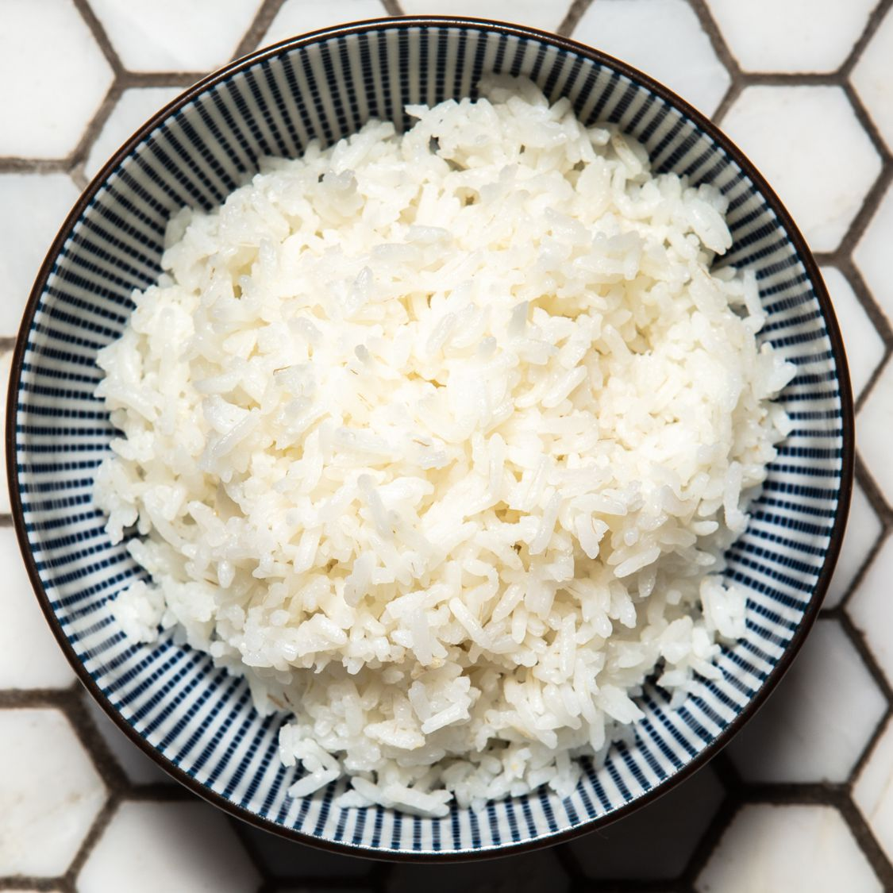

White Rice

White Rice
White rice is the easiest food to cook.
It is best served with stewed beans on top, and you can accompany it with any meat, poultry or fish.
Ingredients:
- 2 cups of white rice
- 3 cups of water
- 2 tbsp of canola/vegetable oil
- salt
Steps:
- Heat a pot/cauldron to high temperature on your stove.
- Add 2 cups of white rice and 3 cups of water, and 2 tbsp of canola/vegetable oil, salt to taste, and stir it.
- Let it boil until most of the water evaporates.
- When you can see the rice top level, bring the heat temperature to medium low and put on the pot/cauldron lid.
- Wait 10 minutes, then open the lid, stir the rice and put the lid back on for another 10 minutes.
- Open the lid, stir it and taste the rice, if it is tender then it is ready to serve!